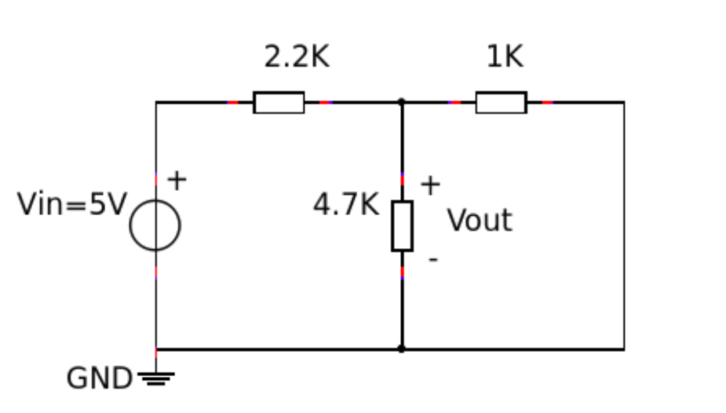
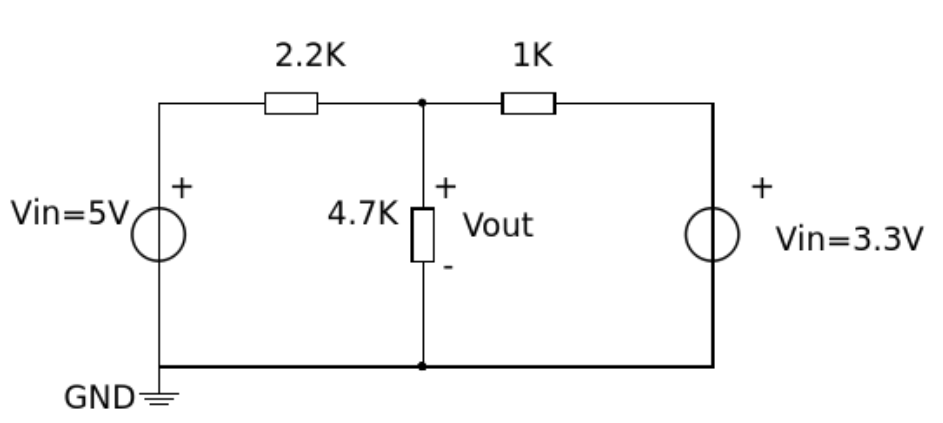
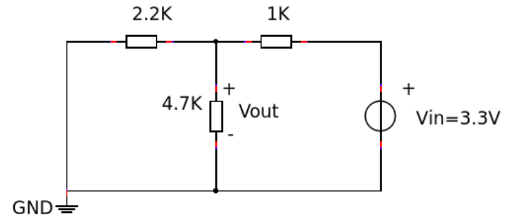

4. Proportionalität und Überlagerung¶
4.1. Zielsetzung¶
Das Ziel dieser Labortätigkeit ist die Überprüfung des Proportionalität- und Überlagerungssatzes (Superposition).
Bemerkung
In diesen Tutorials verwenden wir die Terminologie aus dem Benutzerhandbuch wenn es um die Anschlüsse an die Red Pitaya STEMlab-Karte geht. Hardware. Verlängerungsstecker-Pins, die als 5V- und 3,3V-Spannungsquelle verwendet werden sind in der Dokumentation zu den Steckverbindern E1 und E2 aufgeführt.
4.2. Hintergrund¶
In dieser Übung werden Proportionalitäts- und Überlagerungssätze untersucht, indem sie auf die, in den folgenden Abbildungen dargestellten Schaltungen, angewendet werden.
Das Proportionalitätstheorem besagt, dass die Reaktion einer Schaltung proportional zur Quelle ist, die auf diese Schaltung wirkt. Dies wird auch als Linearität bezeichnet. Die Proportionalitätskonstante A bezieht die Eingangsspannung auf die Ausgangsspannung als:
(4.1)¶\[V_{out} = Ein \cdot V_{in}\]Der Proportionalitätsfaktor A wird manchmal als Verstärkung einer Schaltung bezeichnet.
Für die Schaltung in Abb. Abb. 4.1 ist die Spannungsquelle \(V_{in}\) die Quellspannung.
Die Ausgangsspannung \(V_{out}\) liegt über dem \(4,7 k\Omega\) Widerstand. Das wichtigste Ergebnis der Linearität ist Überlagerung.
Abb. 4.1 Widerstandsschaltung mit \(5V\) Spannungsquelle.
Der Überlagerungssatz (Superposition) besagt, dass die Reaktion einer linearen Schaltung mit mehreren unabhängigen Quellen, wie in Abb. 4.2, durch Addition der individuellen Reaktionen, die durch die einzelnen Quellen verursacht werden, die allein wirken, erhalten werden kann. Bei einer unabhängigen Quelle, die allein arbeitet, werden alle anderen unabhängigen Spannungsquellen im Stromkreis durch Kurzschlüsse und alle anderen unabhängigen Stromquellen durch Leerläufe ersetzt, wie in Abbildung 3 dargestellt.
Abb. 4.2 Schaltung mit zwei Spannungsquellen.
Abb. 4.3 Schaltung zur Reaktion von nur einer Quelle.
4.3. Materialien¶
- Red Pitaya STEMlab 125-14 oder STEMlab 125-10
- Verschiedene Widerstände:
- \(1 k\Omega\)
- \(2,2 k\Omega\)
- \(4,7 k\Omega\)
4.4. Vorgehensweise¶
Überprüfen Sie den Proportionalitätssatz:
- Bauen Sie die Schaltung aus Abb. Abb. 4.1 auf.
- Im ersten Fall verwenden Sie als Spannungsquelle \(V_{in} = 5V\) den STEMlab-Spannungsstift am Erweiterungsstecker E2.
- Im zweiten Fall verwenden Sie als Spannungsquelle \(V_{in}=3.3V\) den STEMlab-Spannungsstift am Erweiterungsstecker E1.
- Im dritten Fall verwenden Sie als Spannungsquelle \(V_{in} = -3.3V\) den STEMlab-Spannungsstift am Erweiterungsstecker E2.
- Stellen Sie die Sondendämpfung sowohl an der Oszilloskopsonde als auch in der Menü-Einstellung des IN1 in der Oszilloskopanwendung auf \(\times 10\) ein.
- Messen Sie \(V_{out}\) mit der Oszilloskopanwendung.
- Sie sollten die tatsächlichen festen Netzspannungen ebenfalls messen und aufzeichnen.
Tab. 4.1 Tabelle 1¶ Vin Vout A 5.0 V 3.3 V -3.3 V
- Berechnen Sie den jeweiligen Wert von A mit Hilfe der Gl.(1).
- Zeichnen Sie ein Diagramm mit Vinauf der x-Achse und Voutauf der y-Achse.
- Überprüfen des Überlagerungssatzes:
- Bauen Sie die Schaltung von Abb. 2 auf. Messen und protokollieren Sie die Spannung am \(4.7\,k\Omega\) Widerstand.
- Bauen Sie die Schaltung von Abb. 3 auf. Messen und protokollieren Sie die Spannung am \(4,7\,k\Omega\) Widerstand.
Bemerkung
Das Messen des Spannungsabfalls am gewünschten Widerstand erfolgt so, dass die Oszilloskopsonde von IN1 mit der einen Seite des Widerstands und die Oszilloskopsonde von IN2 mit der anderen Seite des Widerstands verbunden ist. Die Spannungsdifferenz Vin1-Vin2gibt eine Spannung am gemessenen Widerstand an.
Berechnen Sie die Gesamtreaktion „Vout“ für die Schaltung der Figur 2, in dem Sie die Ergebnise aus der Messung der Schaltung von Figur 1 und Messung der Schaltung von Figur 3 addieren.
Vout (figure 2) = Vout (figure 1) + Vout (figure 3) = _______________
Vergleichen Sie Ihr berechnetes Ergebnis mit dem, was Sie in Schritt 2a gemessen haben. Erklären Sie eventuelle Unterschiede.

Abb. 4.4 Abbildung 4: Spannungsstift auf der Red Pitays STEMlab-Platine
4.5. Fragen zu¶
- Ist die erhaltene Grafik eine gerade Linie? Berechnen Sie die Steigung der Grafik an jedem beliebigen Punkt und vergleichen Sie sie mit dem Wert von K, der sich aus den Messungen ergibt. Erklären Sie eventuelle Unterschiede.
- Wie genau haben sich die berechneten und gemessenen Ergebnisse für jede der drei Schaltungen, die Sie für das Überlagerungsexperiment gebaut haben, verhalten? Erklären Sie eventuelle Unterschiede.